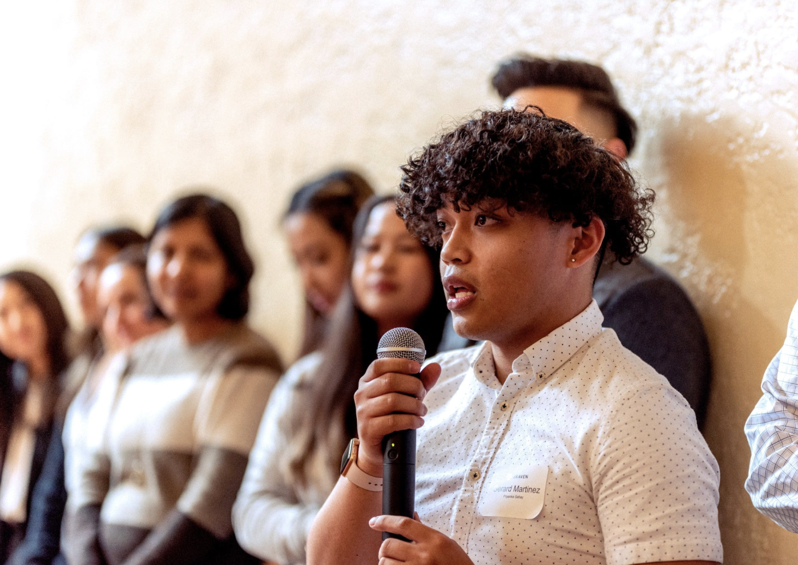

01 Mobile app · Research to product
Braven Connect
Braven assumed students wanted more career information. Our research showed they wanted a clear next step and direct, 1:1 contact — so we designed the mobile app around a personalised career roadmap, from wireframes to six production-ready screens.
01 / 07